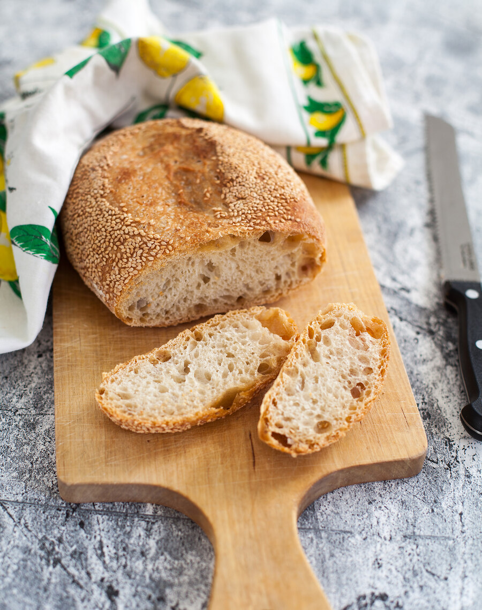

Клейковину в тесте, которая участвует в формировании воздушного пористого мякиша, можно развить двумя способами: либо очень тщательно вымесив тесто, либо оставив на длительную расстойку. Этот хлеб без замеса — образец второго способа.
Хлеб без замеса стал популярен благодаря Джиму Лэхи и его булочной Sullivan Street Bakery в Нью-Йорке. Очень простой с точки зрения ингредиентов и манипуляций: не нужно долго вымешивать тесто, а только до объединения ингредиентов и полного увлажнения муки, после чего оставить расстаиваться на несколько часов. Можно вымесить накануне вечером и продолжить утром, а можно замесить утром и продолжить вечером — очень легко встроить в свой режим.
Единственный момент, который может смутить поначалу, — это достаточно высокая влажность теста, с которым не очень удобно работать. Но стоит приноровиться, и все пойдет как по маслу. Чем выше влажность, тем вкуснее хлеб, но со слишком влажным тестом труднее работать, поэтому я предлагаю начать с усредненного варианта. А еще в качестве обсыпки использовать не отруби и семолину, а кунжут. Благодаря ему тесто не прилипнет к ткани расстоечной корзины или льняному полотенцу.
Для этого рецепта потребуется тяжелая глубокая толстостенная кастрюля с крышкой: такая посуда работает как камень, а крышка нужна для того, чтобы создать определенный уровень влажности без использования дополнительной воды. Кстати, я этим методом — использование крышки вместо стакана воды — пользуюсь достаточно часто. Когда мне нужно испечь одну буханку (на камне), я накрываю ее большой металлической миской, через 20 минут снимаю и допекаю хлеб без нее.
Хлеб в деревенском стиле — с пористым мякишем, немного тягучий и с хрустящей корочкой. Мне нравится этот хлеб в разных версиях: его можно делать лишь из белой пшеничной муки, разные семена и семечки использовать не только в качестве посыпки, но и добавлять в само тесто.